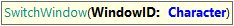
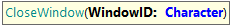

If your application automatically launches different windows/tabs (ie. after clicking on some link), you can handle test automation on top.
So, these commands are not intended to open links or actions in a new tab but to handle tabs that are opened by the SUT (system under test).
There are 2 simple commands to handle those tabs, SwitchWindow (to set the current tab where the following test commands will be executed) and CloseWindow (to close a tab).
Both need a "WindowID" parameter that needs to be named like the following rule:
To better understand behavior, you can see the test example below.

Sets the current browser window/tab to automate
Parameters:
Example of use:
&driver.SwitchWindow("win_ser_1")

Closes a previously opened window/tab
Parameters:
Example of use:
&driver.CloseWindow("win_ser_1")
This is an example of a UI test that opens a Chrome Browser, and handle 3 different tabs:
// Script generated using GXtest Recorder
//Set browser
&driver.SetBrowser(Browsers.Chrome)
//Start webdriver
&driver.Start()
&driver.Maximize()
// Open a "multi-tab" webpage:
&driver.Go("https://the-internet.herokuapp.com/windows")
// Let's open the first tab
&driver.ClickByLinkText("Click Here")
// Let's set the current tab as the recently opened one:
&driver.SwitchWindow("win_ser_1")
// Let's check that we are in the new tab:
AssertStringEquals("New Window",&driver.GetTextByCSS("h3"),"problem on tab #1")
// Go back to the first tab:
&driver.SwitchWindow("win_ser_local")
// Open tab #2
&driver.ClickByLinkText("Click Here")
// Set current tab as the second one:
&driver.SwitchWindow("win_ser_2")
// Let's check that we also can do things there ....
AssertStringEquals("New Window",&driver.GetTextByCSS("h3"),"problem on tab #2")
// Close tab #2
&driver.CloseWindow("win_ser_2")
&driver.SwitchWindow("win_ser_local")
&driver.SwitchWindow("win_ser_1")
// Close tab #1
&driver.CloseWindow("win_ser_1")
&driver.SwitchWindow("win_ser_local")
&driver.End()
| Backlinks | |
| GXtest UI Commands - Handling multiple Windows / Tabs | GXtest UI Test for Web - Supported Commands |
| Toc:GXtest v4 |